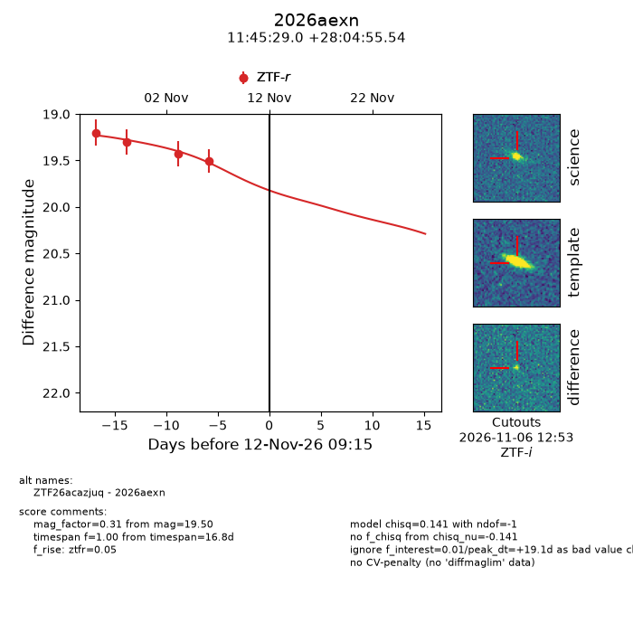
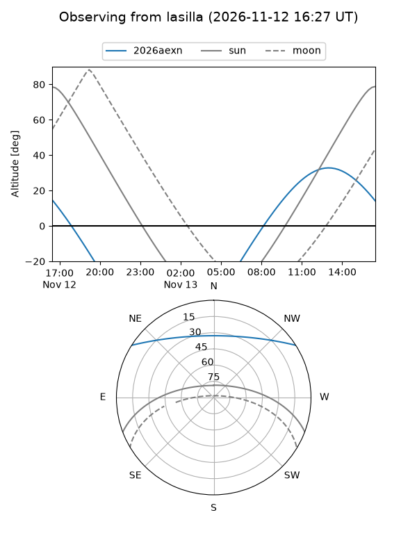
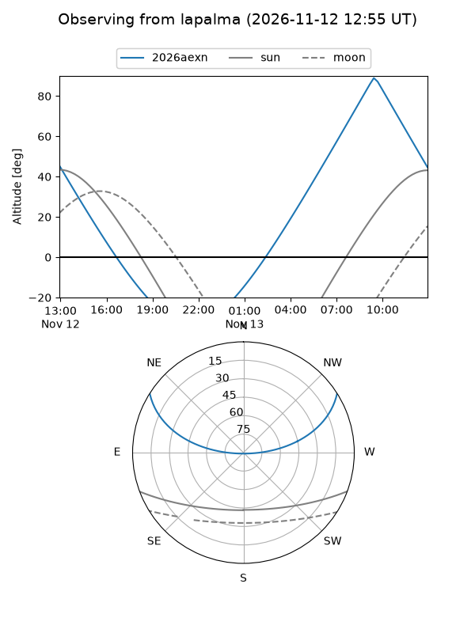
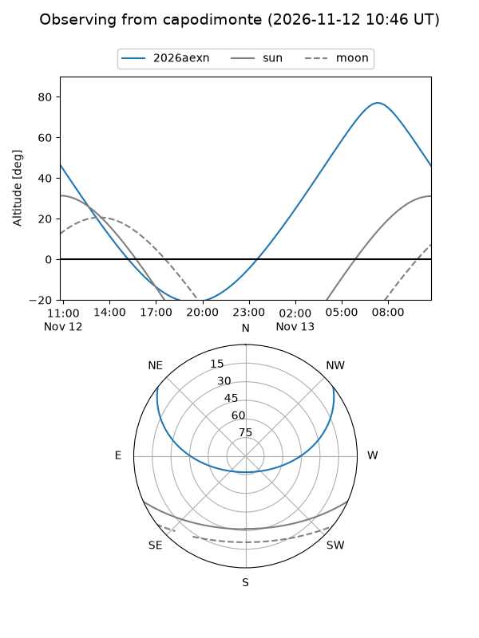
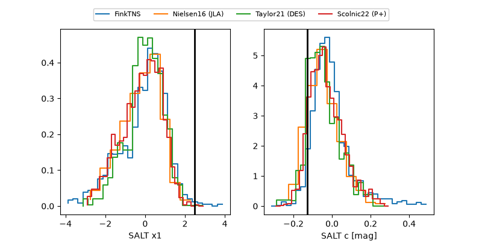

2026aexn
Target 2026aexn at 2026-11-12 09:20
Aliases and brokers:
FINK-ZTF: ztf.fink-portal.org/ZTF26acazjuq
Lasair-ZTF: lasair-ztf.lsst.ac.uk/objects/ZTF26acazjuq
ALeRCE-ZTF: alerce.online/object/ZTF26acazjuq
YSE-PZ: ziggy.ucolick.org/yse/transient_detail/2026aexn
TNS name: wis-tns.org/object/2026aexn
Direct TNS query: direct search
alt names
ZTF26acazjuq (ztf,fink_ztf)
2026aexn (tns,yse)
Coordinates:
equatorial (ra, dec) = 176.3709,+28.08209
equatorial (HMS+DMS) = 11:45:29.01,+28:04:55.54
galactic (l, b) = (205.3816,+75.36850)
Flags:
peak dt: +19.1
Photometry:
last ztfr=19.50
4 ztfr detections
Lightcurve

Visibility



Additional plots
